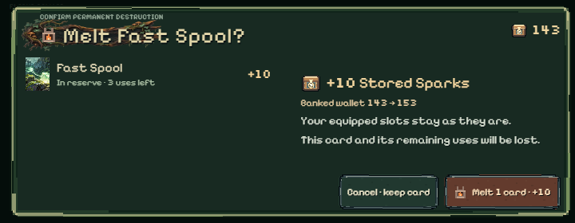

Six-second muted capture of the actual game. Missed inspection Sparks and equipped modifiers are staged; latching, reeling and delivery use live gameplay.
Play Emberwing · Open video

Release furnace-tow-1.